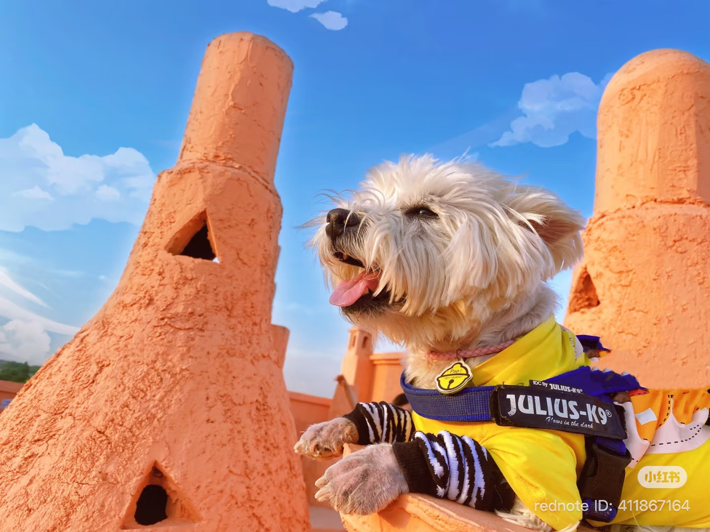
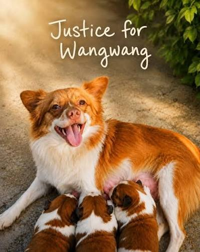
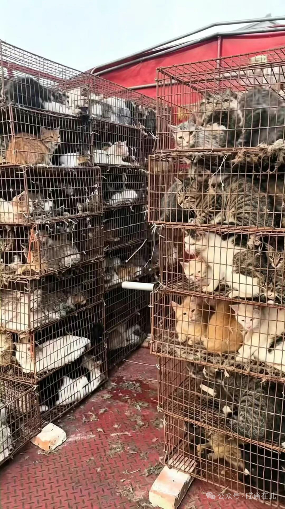

Documenting Their Stories
This independent archive collects publicly reported cases, historical records, media coverage, and legal resources. Cases are organized chronologically, with continuing cases grouped under the period in which they remain active.
Cases Timeline
Browse documented cases by year and period. Select a case to read its background, public response, sources, and available updates.
2021
2022
COVID-19 Period
Snowball
A Samoyed was reportedly killed during residential disinfection while its owner was away in quarantine.
Read the case →
Beijing
Papi and the Beijing Pet Poisoning Case
In September 2022, Papi and numerous other dogs and stray cats were poisoned in a Beijing residential community. The case later developed into a prolonged legal battle and renewed public discussion about protections for companion animals.
Read the case →
2026
– Present
– Present

Jieyang, Guangdong
Ongoing
Wangwang and Her Puppies
The deaths of a community mother dog and her puppies sparked widespread outrage and renewed calls for stronger legal protection for animals. Public discussion, media coverage, and advocacy efforts remain ongoing.
Read the case →
Multiple Locations
Ongoing
Cat Transport and Rescue Cases
Large-scale cat transportation incidents involving questions of ownership, welfare, and intended destination have led to repeated rescue efforts and continuing public concern.
Read the cases →Animal Protection Laws
Background information on animal welfare laws, proposed reforms, enforcement issues, and legal developments.
Current Legal Framework
An overview of laws and regulations relevant to animal management, disease control, wildlife, and public safety.
Read more →Proposed Animal Protection Law
An overview of legislative proposals, academic initiatives, public consultation, and continuing discussions surrounding animal protection legislation in China.
Read more →Comparative Legal Frameworks
A comparison of selected animal welfare frameworks and anti-cruelty laws in other jurisdictions.
Read more →Media Archive
A source index preserving news coverage, public records, academic research, and archived materials connected to documented animal welfare cases.
News Coverage
International, regional, and independent reporting related to documented animal welfare cases, including news articles, investigations, interviews, and feature stories.
View coverage →Government Records
Official statements, government notices, police announcements, court documents, administrative records, and other public materials related to documented cases.
View records →Academic Publications
Journal articles, legal analyses, policy papers, reports, and academic publications concerning animal welfare, companion animals, and animal protection law.
View research →Archived Sources
Preserved webpages, archived social-media posts, cached articles, screenshots, and historical references maintained when original materials become difficult to access.
View archive →Advocacy & Public Action
Public petitions, open letters, educational resources, and lawful ways to support stronger animal protection. Inclusion does not necessarily represent endorsement by this archive.
Petitions & Open Letters
Public petitions, open letters, and advocacy campaigns calling for stronger legal protection, greater transparency, accountability, and improved animal welfare.
View campaigns →Organizations & Resources
Animal-welfare organizations, legal resources, educational materials, and advocacy groups working on animal protection and responsible public awareness.
Explore resources →How You Can Help
Learn how to support responsible reporting, preserve reliable information, promote animal welfare, and participate in lawful, evidence-based advocacy.
Learn more →About This Archive
Voices For Animals CN is an independent, non-commercial documentation project preserving publicly reported animal welfare cases related to China. The archive organizes case histories, official records, media reporting, legal materials, research, and public responses.
Preserve Reliable Public Records
The archive aims to make documented cases and their supporting sources easier to locate, compare, preserve, and responsibly cite.
Separate Evidence from Allegation
Pages distinguish official findings, media reporting, public allegations, commentary, and developing information. Original sources are prioritized whenever available.
Request a Correction or Update
Pet owners, directly affected parties, publishers, and readers may submit corrections, additional sources, attribution updates, or requests concerning personal material.
Submit a correction →Share Publicly Available Information
Reliable news reports, official documents, archived webpages, court materials, translations, and documented case updates may be submitted for review. Submission does not guarantee publication.
Submit a source →Contact
For general inquiries, correction requests, media inquiries, source submissions, translation assistance, or removal requests:
voicesforanimalscn@gmail.comArtificial intelligence tools have assisted with website coding, layout, drafting, translation, and editorial organization. Sources, factual claims, and final publication decisions are reviewed and selected by the archive's human editor.